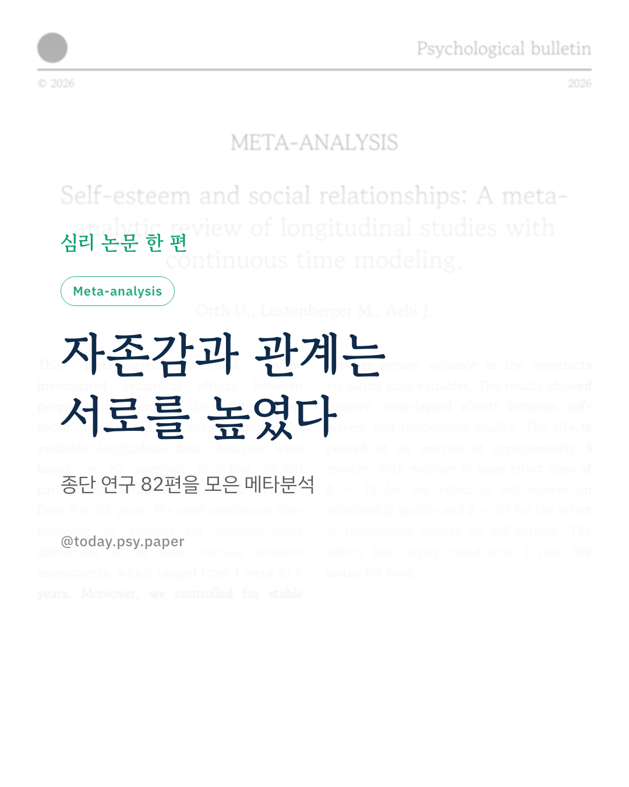
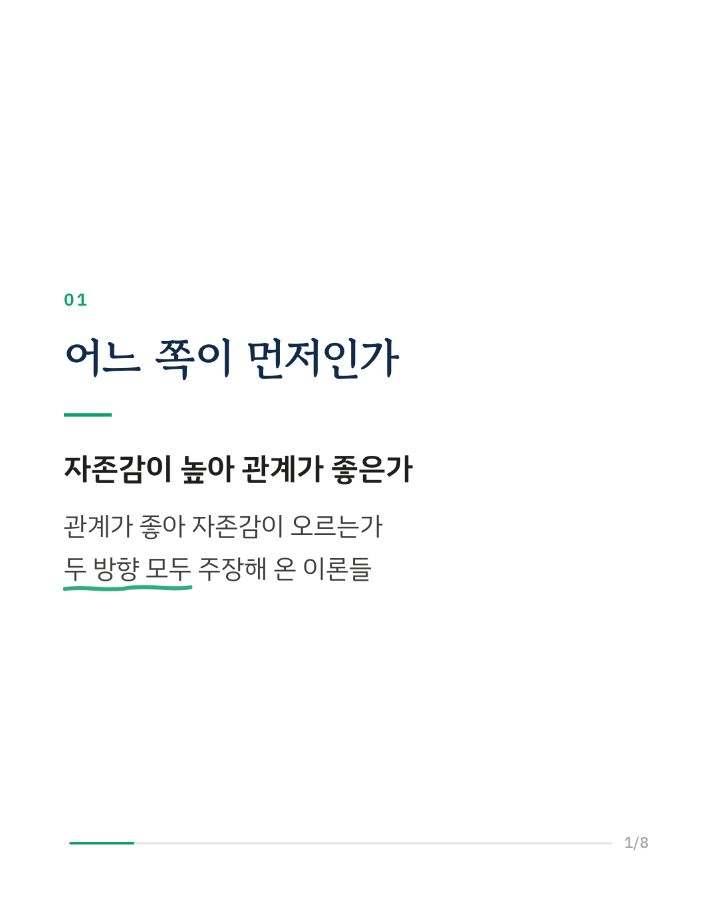
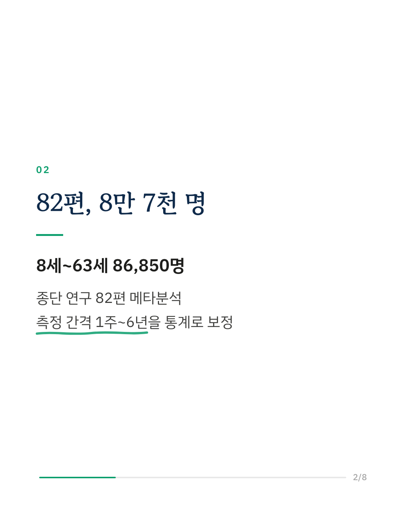
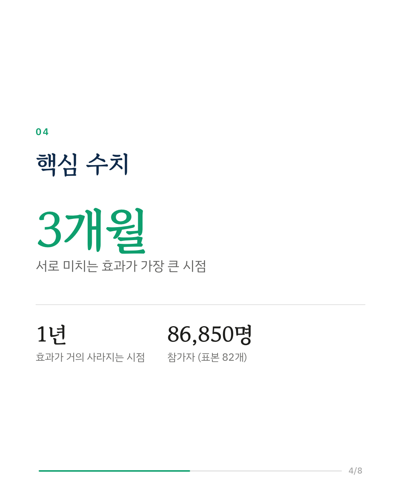
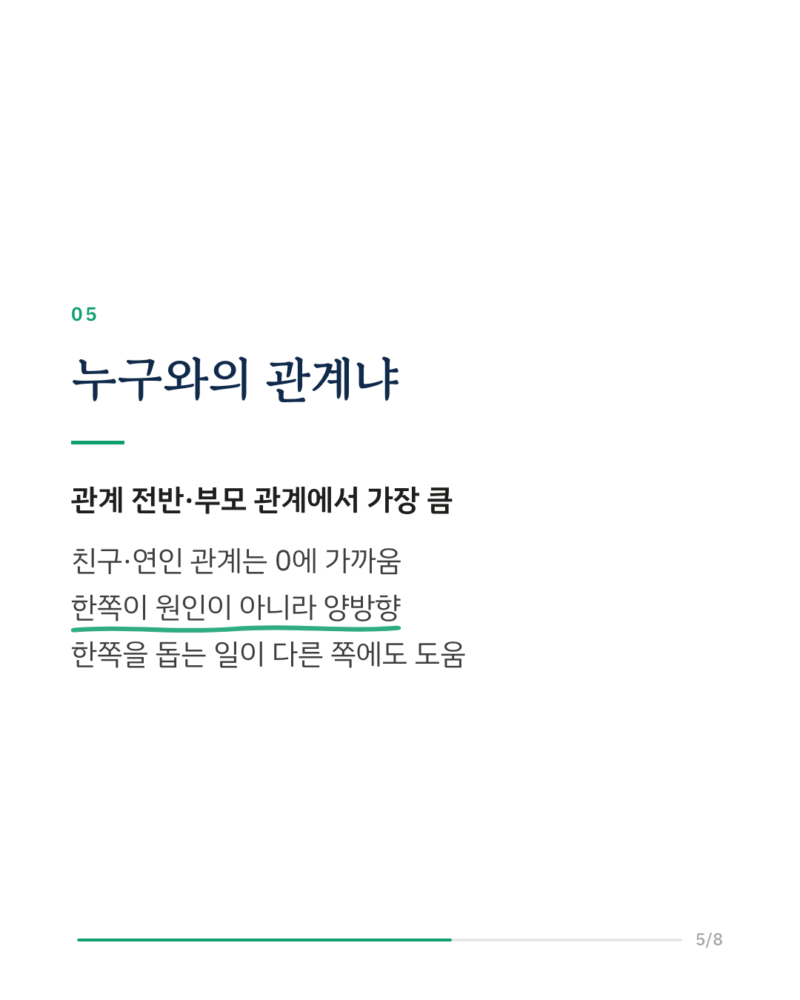
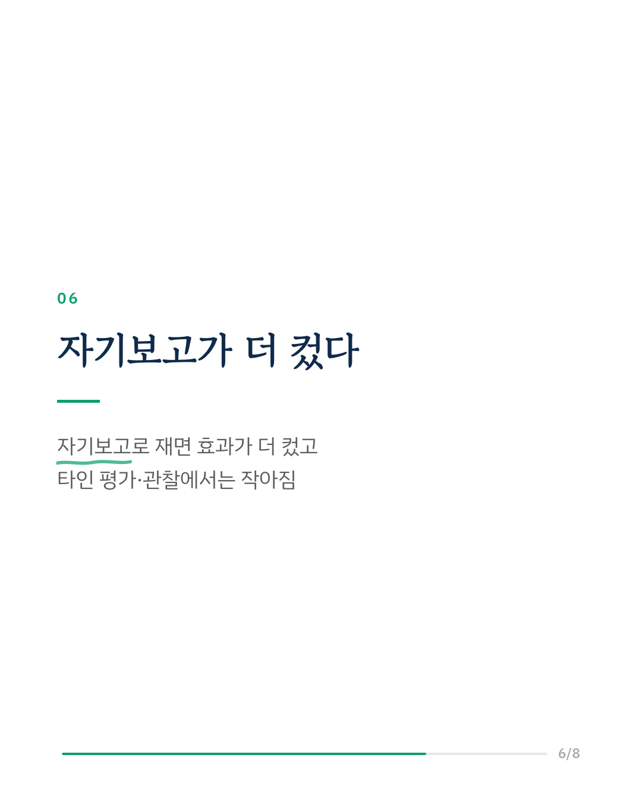
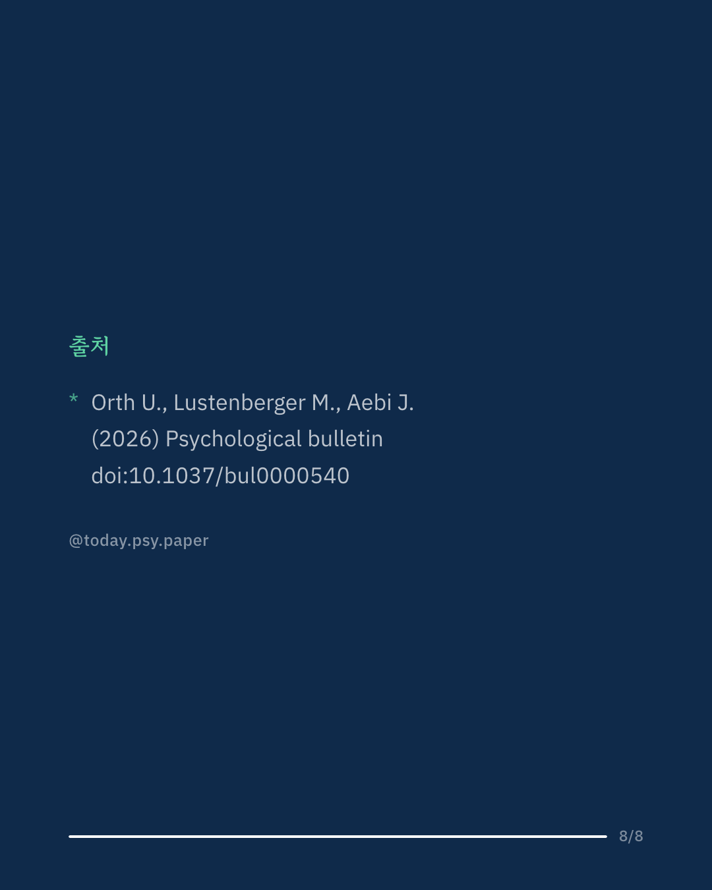

자존감과 인간관계의 질은 어느 쪽이 어느 쪽을 바꾸는지 오래 논쟁이 있었습니다. 이 연구는 종단 연구 82편, 8세부터 63세까지 86,850명의 자료를 모아 두 방향의 영향을 함께 분석한 메타분석입니다. 연구마다 측정 간격이 1주에서 6년까지 달라서, 간격 차이를 통계적으로 보정하는 연속시간 모형을 썼습니다. 결과는 양방향이었습니다. 자존감이 높아지면 이후 관계의 질이 좋아지고, 관계가 좋아지면 이후 자존감도 올라갔습니다. 자존감이 관계에 미치는 영향이 조금 더 컸습니다. 두 효과는 약 3개월 간격에서 가장 뚜렷했고, 1년이 지나면 거의 사라졌습니다. 숫자 자체는 작아 보이지만, 이런 종류의 종단 연구에서는 중간에서 큰 편에 해당한다고 저자들은 설명합니다. 누구와의 관계인지에 따라 달랐습니다. 사회적 관계 전반과 부모와의 관계에서 효과가 가장 컸고, 친구나 연인 관계에서는 0에 가까웠습니다. 저자들은 관계가 자존감의 바탕이 된다는 이론과 자존감이 관계를 만든다는 이론을 모두 뒷받침하는 결과라고 봅니다. 한계로는, 관계를 자기보고로 잰 연구에서 효과가 더 크게 나와 다른 방식으로 잴 때는 영향이 더 작을 수 있습니다. Psychological Bulletin (2026), 'Self-esteem and social relationships: A meta-analytic review of longitudinal studies with continuous time modeling' DOI: 10.1037/bul0000540 #임상심리 #정신건강정보 #심리학연구 #논문리뷰 #자존감 #인간관계 #대인관계심리 #메타분석
python3 publish.py 42970087